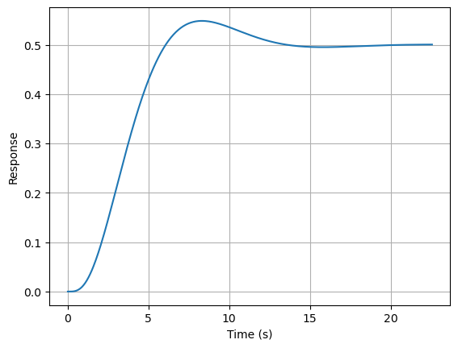
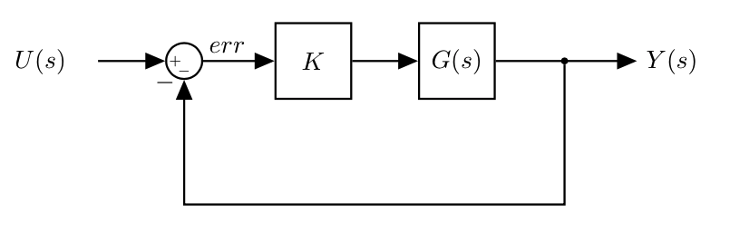
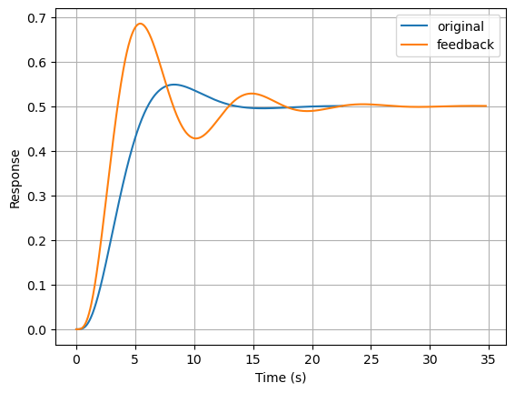
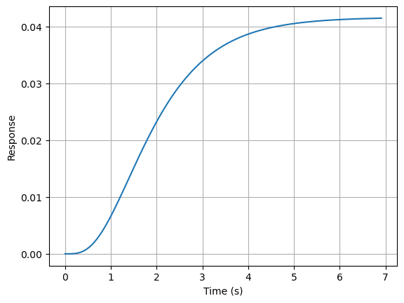
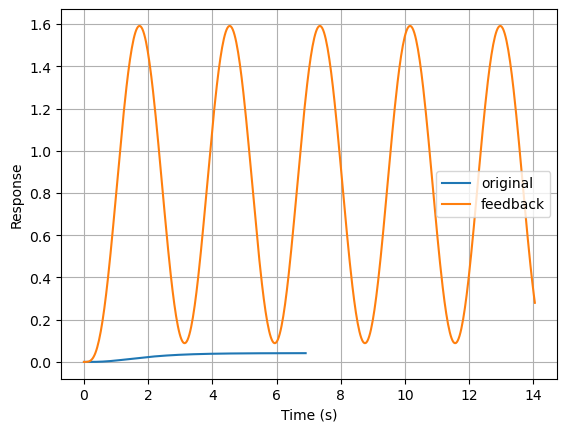

# Import relevant libraries (we have imported them already so we comment these out)
# import control
# import matplotlib.pylab as pltRouth-Hurwitz Criterion
Background
- Given a system with transfer function \(G(s) = \frac{N(s)}{D(s)}\): in order for a system to be stable, all the roots of its characteristic equation \(D(s)=0\) must have \(Re < 0\)
- The roots of the characteristic equation \(D(s)=0\) are the poles of the transfer function \(G(s)\).
For example:
\[G(s) = \frac{1}{s+a}\]
whose inverse Laplace transform to get the time domain representation is:
\[\mathcal{L}^{-1}(G(s)) = e^{-at} = e^{st}\]
if \(a > 0\), the system is stable: signals go to zero as time goes to infinity.
if \(a < 0\), the system is unstable: the response of the system goes to infinity.
We can have more complex transfer functions:
\[G(s) = \frac{1}{s+a}\frac{1}{s+b}\frac{1}{s+c}...\]
and we know that we can always simplify a transfer function using partial fraction expansion:
\[G(s) = \frac{A}{s+a} + \frac{B}{s+b} + \frac{C}{s+c}...\]
and
\[\mathcal{L}^{-1}(G(s)) = Ae^{-at} + Be^{-bt} + Ce^{-ct}...\]
If there is one root that is unstable, the system is unstable.
We know that we can determine the stability of the system calculating the roots of the characteristic equation
Calculating the roots of a polynomial for \(n>2\) is time consuming, and possibly even impossible in closed form
\[12s^5+14s^4+3s^3+s^2+16s+11=0\]
We would like to determine stability (hence the roots of \(D(s)=0\)) without solving for the roots directly
This is where the Routh-Hurwitz criterion can help us
Routh–Hurwitz stability criterion > All the roots of a polinomial have \(Re<0\) if and only if a certain set of algebraic combinations (i.e. fill out the RH array) of its coefficients have the same signs
- The Routh–Hurwitz stability criterion is a mathematical test that is a necessary and sufficient condition for the stability of a linear time invariant (LTI) control system
- Determine whether all the roots of the characteristic polynomial of a linear system have negative real parts
- The importance of the criterion is that the roots \(p\) of the characteristic equation of a linear system with negative real parts represent solutions \(e^{pt}\) of the system that are stable (bounded).
- The criterion provides a way to determine if the equations of motion of a linear system have only stable solutions, without solving the system directly
Given:
\[G(s) = \frac{N(s)}{D(s)}\]
- If all the signs of the coefficients are NOT the same, then the system is unstable
- e.g. \(s^5+3s^3-4s^2+s+1\) \(\rightarrow\) unstable
- If all the signs are the same, then the system can be stable or unstable
For example:
\[G(s) = \frac{1}{(s^2-s+4)(s+2)(s+1)}\]
the roots are \(0.5\pm j1.9365\) (unstable roots), \(-2, -1 \Rightarrow\) we have two roots with \(Re > 0\).
If we write the characteristic equation however:
\[s^4+2s^3+3s^2+10s+8 = 0\]
- All coefficients have the same sign. We need to use the RHC and populate the Routh array
Routh-Hurwitz array
A tabular method can be used to determine the stability when the roots of a higher order characteristic polynomial are difficult to obtain.
For an \(n\)th-degree polynomial
\[ D(s)=a_{n}s^{n}+a_{{n-1}}s^{{n-1}}+\cdots +a_{1}s+a_{0} \]
the table has \(n + 1\) rows and the following structure:
| \(s^n\) | \(a_{n}\) | \(a_{n-2}\) | \(a_{n-4}\) | \(...\) |
| \(s^{n-1}\) | \(a_{n-1}\) | \(a_{n-3}\) | \(a_{n-5}\) | \(...\) |
| \(...\) | \(b_1\) | \(b_2\) | \(b_3\) | \(...\) |
| \(...\) | \(c_1\) | \(c_2\) | \(c_3\) | \(...\) |
| \(s^{1}\) | \(...\) | \(...\) | \(...\) | \(...\) |
| \(s^{0}\) | \(...\) | \(...\) | \(...\) | \(...\) |
where the elements \(b_{i}\) and \(c_{i}\) can be computed as follows:
\[ {\displaystyle b_{i}={\frac {a_{n-1}\times {a_{n-2i}}-a_{n}\times {a_{n-(2i+1)}}}{a_{n-1}}}.} \]
\[ {\displaystyle c_{i}={\frac {b_{1}\times {a_{n-(2i+1)}}-a_{n-1}\times {b_{i+1}}}{b_{1}}}.} \]
- When completed, the number of sign changes in the first column will be the number of non-negative roots.
Examples
\[G(s) = \frac{1}{(s^2-s+4)(s+2)(s+1)} = \frac{1}{s^4+2s^3+3s^2+10s+8}\]
| \(s^4\) | \(1\) | \(3\) | \(8\) |
| \(s^{3}\) | \(2\) | \(10\) | |
| \(s^2\) | \(\frac{2\cdot3-1\cdot10}{2}=-2\) | \(\frac{2\cdot8-1\cdot0}{2}=8\) | |
| \(s^{1}\) | \(\frac{-2\cdot10-2\cdot8}{-2}=18\) | \(0\) | |
| \(s^{0}\) | \(\frac{18\cdot8-2\cdot0}{2}=8\) |
- Determine the number of roots in RHP by counting the number of sign changes in the first column: the are two sign changes, hence there are two roots with \(Re>0\)
- The system is unstable.
\[G(s) = \frac{1}{s^4+2s^3+3s^2+4s+5}\]
| \(s^4\) | \(1\) | \(3\) | \(5\) |
| \(s^{3}\) | \(2\) | \(4\) | \(0\) |
| \(s^2\) | \(\frac{2\cdot3-1\cdot4}{2}=1\) | \(\frac{2\cdot5-1\cdot0}{2}=5\) | |
| \(s^{1}\) | \(\frac{1\cdot4-2\cdot5}{1}=-6\) | \(0\) | |
| \(s^{0}\) | \(\frac{-6\cdot5-1\cdot0}{-6}=5\) |
We have two roots with \(Re>0\)
Roots: \(-1.28\pm j0.858, 0.28\pm j1.416\)
Routh-Hurwitz criterion: special cases
Special case 1)
A zero in a row with at least one non-zero appearing later in the row
The system is always unstable
We can still fill out the table to know how many are unstable
Example 1:
\[G(s) = \frac{1}{1s^4+2s^3+0s^2+3s+4}\]
| \(s^4\) | \(1\) | \(0\) | \(4\) |
| \(s^{3}\) | \(2\) | \(3\) | \(0\) |
| \(s^2\) | \(\frac{2\cdot0-1\cdot3}{2}=\frac{-3}{2}\) | ||
| \(s^{1}\) | |||
| \(s^{0}\) |
We can already say that the system is unstable
- Example 2: \[G(s) = \frac{1}{1s^4+2s^3+2s^2+4s+5}\]
| \(s^4\) | \(1\) | \(2\) | \(5\) |
| \(s^{3}\) | \(2\) | \(4\) | \(0\) |
| \(s^2\) | \(0 \rightarrow \epsilon\) | \(5\) | |
| \(s^{1}\) | \(\frac{\epsilon\cdot4-2\cdot5}{\epsilon}\) | \(0\) | |
| \(s^{0}\) | \(5\) |
- To calculate the coefficients we need to calculate the values for $_{} $
| \(s^4\) | \(1\) | \(2\) | \(5\) |
| \(s^{3}\) | \(2\) | \(4\) | \(0\) |
| \(s^2\) | \(0^+\) | \(5\) | |
| \(s^{1}\) | \(4-\frac{10}{\epsilon} = -\infty\) | \(0\) | |
| \(s^{0}\) | \(5\) |
- We have two roots with \(Re > 0\)
Special case 2)
- An entire row is zeros
\[G(s) = \frac{1}{1s^5+2s^4+6s^3+10s^2+8s+12}\]
| \(s^5\) | \(1\) | \(6\) | \(8\) |
| \(s^4\) | \(2\) | \(10\) | \(12\) |
| \(s^{3}\) | \(1\) | \(2\) | \(0\) |
| \(s^2\) | \(6\) | \(12\) | \(0\) |
| \(s^{1}\) | \(0\) | \(0\) | \(0\) |
| \(s^{0}\) | \(?\) |
- There are only 3 possible conditions that can lead to a Routh array with all zeros in a row:
- two real roots, equal and opposite in sign \(\Rightarrow\) unstable
- two imaginary roots, that are complex conjugate of each other \(\Rightarrow\) marginally stable - response is oscillatory
- four roots that are all equal distance from the origin \(\Rightarrow\) unstable
To determine the system stability:
Here is the original table: | | | | | | —— | —— | - | - | | \(s^5\) | \(1\) | \(6\) | \(8\) | | \(s^4\) | \(2\) | \(10\) | \(12\) | | \(s^{3}\) | \(1\) | \(2\) | \(0\) | | \(s^2\) | \(6\) | \(12\) | \(0\) | | \(s^{1}\) | \(0\) | \(0\) | \(0\) | | \(s^{0}\) | \(?\) | | |
- We build the auxiliary polinomial using the row right above the one that is zero:
- Those are the coefficients of the auxiliary polinomial
- \(p(s)=6s^2+12s^0=0 \rightarrow p(s)=s^2+2\)
- Note that we are skipping every other power
- Take the derivative of \(p(s)\): \(\frac{d}{ds}p(s)=2s\) and replace the all zero row with the coefficient of \(\frac{d}{ds}p(s)\)
- Complete the table as we would normally
- We build the auxiliary polinomial using the row right above the one that is zero:
| \(s^5\) | \(1\) | \(6\) | \(8\) |
| \(s^4\) | \(2\) | \(10\) | \(12\) |
| \(s^{3}\) | \(1\) | \(2\) | \(0\) |
| \(s^2\) | \(6\) | \(12\) | \(0\) |
| \(s^{1}\) | \(2\) | \(0\) | \(0\) |
| \(s^{0}\) | \(12\) |
- No sign changes in the first column, hence no roots with \(Re >0\).
- This means that the system must have two imaginary roots and is marginally stable.
Additional comments:
- The auxiliary polinomial \(p(s)\) exists if and only if there is an all zero row in the routh array, and it is a factor of the original polinomial \(q(s)\) (it divides the original polinomial with no reminder):
\[p(s)r(s)=q(s)\]
The original polinomial \(q(s)\) is the one we started from (e.g., denominator of \(G(s)\))
This makes it possible to calculate how many roots have \(Re<0\), how many \(Re=0\) and how many \(Re>0\)
We can determine \(r(s) = \frac{q(s)}{p(s)}\) (polinomial division)
In our case:
\[ (s^5+2s^4+6s^3+10s^2+8s+12)\;\; :\;\; (s^2+2) \]
\[\Downarrow\]
\[ r(s) = s^3 + 2s^2+4s+6 \]
- with no remainder.
and this means: \[ q(s)= (s^2+2)(s^3 + 2s^2+4s+6) \]
- Only true if we have a row of all zeros, or we will have some non zero reminder when we do the division
If we now re-write our table here:
| \(s^5\) | \(1\) | \(6\) | \(8\) |
| \(s^4\) | \(2\) | \(10\) | \(12\) |
| \(s^{3}\) | \(1\) | \(2\) | \(0\) |
| \(s^2\) | \(6\) | \(12\) | \(0\) |
| \(s^{1}\) | \(2\) | \(0\) | \(0\) |
| \(s^{0}\) | \(12\) |
Any part of the table above the auxiliary polinomial \(p(s)=6s^2+12 = s^2+2\) is due to the factor \(r(s)=s^3 + 2s^2+4s+6\), and since there are not sign changes we can say that \(r(s)\) is stable.
The other part of the table is due to the auxiliary polinomial \(p(s)\): the number of sign changes after \(p(s)\) in the table predicts the number of \(Re>0\) roots for \(p(s)\)
Given that we have \(p(s) = s^2+2 \Rightarrow s = \sqrt{-2} = \pm j\sqrt{2} \Rightarrow\) Two complex conjugate roots, the system is marginally stable (what we expected)
Practical uses: beyond stability
- How can we use the Routh Criterion for more than just assessing stability
Suppose you have an open loop system:
\[ G(s) =\frac{1}{s^4+6s^3+11s^2+6s+2} \]
And we can verify its step response:
import numpy as np
np.roots([1, 6, 11, 6, 2])array([-2.6938972+0.41879653j, -2.6938972-0.41879653j,
-0.3061028+0.41879653j, -0.3061028-0.41879653j])sys = control.tf([1], [1, 6, 11, 6, 2])
T, yout = control.step_response(sys)fig = plt.figure()
plt.plot(T, yout)
plt.grid()
plt.xlabel('Time (s)')
plt.ylabel('Response');
Design requirement: - improve system response time
We can add feedback:
|  |
\(U(s)\) is the reference signal (e.g. desired angle, etc.)
Note that the feedback path is unitary: perfect sensor (it always knows the output signal (e.g. system angle) with no delay or error)
We want to tune the gain \(K\) to get the response that we desire
- Adjusting the gain increases the amplitude of the signal (err)
- In an open loop linear system we can increase the amplitude “as much as we want” (it does not affect stability)
- The feedback loop however changes the dynamics
Typical requirement: increase the gain large enough to meet our requirements (e.g. fastest response) while keeping the system stable
Let’s assess the closed loop stability using RHC
- Simplify the block diagram: \[ \hat{G}(s) = \frac{\frac{K}{s^4+6s^3+11s^2+6s+2}}{1+\frac{K}{s^4+6s^3+11s^2+6s+2}} = \frac{K}{s^4+6s^3+11s^2+6s+2 + K} \]
The new characteristic equation for the closed loop system is: \[ s^4+6s^3+11s^2+6s+2 + K = 0 \]
- Build the Routh array
| \(s^4\) | \(1\) | \(11\) | \(24+K\) |
| \(s^{3}\) | \(6\) | \(6\) | \(0\) |
| \(s^2\) | \(10\) | \(K+2\) | |
| \(s^{1}\) | \(48-6K\) | ||
| \(s^{0}\) | \(K+2\) |
To have asymptotic stability:
- \(48-6K > 0 \rightarrow K < 8\)
- \(K+2>0 \rightarrow K > -2\)
- Stability range is \(-2 < K < 8\)
When \(K=-2\), we have a pole at the origin
When \(K=8\), we have a pair of imaginary poles and the system is marginally stable
We know the gain margin that we have before the system becomes unstable
We do not know where the poles are exactly (we only know when they cross the imaginary axis)
K = 2 #8sys = control.tf([K], [1, 6, 11, 6, 2+K])
T_k, yout_k = control.step_response(sys)fig = plt.figure()
plt.plot(T, yout, label='original')
plt.plot(T_k, yout_k, label='feedback')
plt.grid()
plt.legend()
plt.xlabel('Time (s)')
plt.ylabel('Response');
Example 2
Suppose you have an open loop system:
\[ G(s) =\frac{1}{s^4+10s^3+35s^2+50s+24} = \frac{1}{(s+1)(s+2)(s+3)(s+4)} \]
And we can plot its step response:
sys = control.tf([1], [1, 10, 35, 50, 24])
T, yout = control.step_response(sys)fig = plt.figure()
plt.plot(T, yout, label='original')
plt.grid()
plt.xlabel('Time (s)')
plt.ylabel('Response')Text(0, 0.5, 'Response')
Design requirement: - improve system response time
We can add feedback:
\(U(s)\) is the reference signal (e.g. desired angle, etc.)
Note that the feedback path is unitary: perfect sensor (it always knows the output signal (e.g. system angle) with no delay or error)
We want to tune the gain \(K\) to get the response that we desire
- Adjusting the gain increases the amplitude of the signal (err)
- In an open loop linear system we can increase the amplitude as much as we want
- The feedback loop however changes the dynamics
Typical requirement: increase the gain large enough to meet our requirements (e.g. fastest response) while keeping the system stable
Let’s assess the closed loop stability using RHC
- Simplify the block diagram: \[ \hat{G}(s) = \frac{\frac{K}{s^4+10s^3+35s^2+50s+24}}{1+\frac{K}{s^4+10s^3+35s^2+50s+24}} = \frac{K}{s^4+10s^3+35s^2+50s+24 + K} \]
The new characteristic equation for the closed loop system is: \[ s^4+10s^3+35s^2+50s+24 + K = 0 \]
- Build the Routh array
| \(s^4\) | \(1\) | \(35\) | \(24+K\) |
| \(s^{3}\) | \(10\) | \(50\) | \(0\) |
| \(s^2\) | \(\frac{10\cdot35-50}{10}=30\) | \(24+K\) | |
| \(s^{1}\) | \(42-\frac{K}{3}\) | ||
| \(s^{0}\) | \(24+K\) |
- How many sign changes?
- \(42-K/3 > 0 \rightarrow K < 126\)
- \(K > -24\)
- and solving the system of equations: \(K < 126\)
- When \(K=-24\) we have a pole at the origin
- When \(K = 126\) the poles would be going from \(Re<0\) to \(Re>0\) (imaginary poles) and the system would be marginally stable
Again, - We know the gain margin that we have - We do not know where the poles are exactly (we only know when they cross the imaginary axis)
K = 126sys = control.tf([K], [1, 10, 35, 50, 24+K])
T_k, yout_k = control.step_response(sys)fig = plt.figure()
plt.plot(T, yout, label='original')
plt.plot(T_k, yout_k, label='feedback')
plt.grid()
plt.legend()
plt.xlabel('Time (s)')
plt.ylabel('Response');
Having additional requirements: time to half
Speed of the response depends on the position of the poles on the real axis
- The further from the imaginary axis, the faster the response (true for both stable and unstable poles)
- When \(s=j\omega\) (imaginary poles), the response is a sinusoid (\(e^{j\omega}\) is a sinusoid)
- the closer the poles are to the real axis, the slower the frequency of the response (i.e., slower oscillation)
The time to half is the time for a signal to half (or double, if unstable) the initial signal in magnitude
Typical requirement, especially when dealing with systems that interact with humans: the system should not be too fast or too slow to respond
A time to half requirements is a requirement on the real part of the poles
We would like the poles to be to the left of a line called the z-line
Set \(s=z+\sigma_{des}\)
- When \(z=0\), \(s=+\sigma_{des}\), and the poles have the desired real part.
Given a characteristic equation \(D(s)=0\) \[ s^3+5s^2+25s+30=0 \]
we replace \(s=z+\sigma_{des}\) (e.g \(\sigma_{des}\)=-1)
\[ (z-1)^3+5(z-1)^2+25(z-1)+30=0 \]
\[ \Downarrow \]
\[ z^3+2z^2+18s+9=0 \]
- We can now use the Routh array to verify if the system has any roots to the right of the z-line
| \(s^3\) | \(1\) | \(18\) | |
| \(s^{2}\) | \(2\) | \(9\) | |
| \(s^1\) | \(\frac{27}{2}\) | ||
| \(s^{0}\) | \(9\) |
- No sign changes in the first column: all roots are to the left side of \(s=-1\).
RHC Final Comments
- RHC provides necessary and sufficient conditions to analyse the stability of a system
- The stability analysis can be done with respect to any parameters of the system (including the gain \(K\))
- Building the routh array:
- when we have an all zero row, the roots of the auxiliary polynomial are a subset of the roots of the original polinomial (i.e., of the characteristic equation of the system)
- the roots of the auxiliary polynomial are symmetric with respect to the origin (i.e., wrt real and imaginary axis).